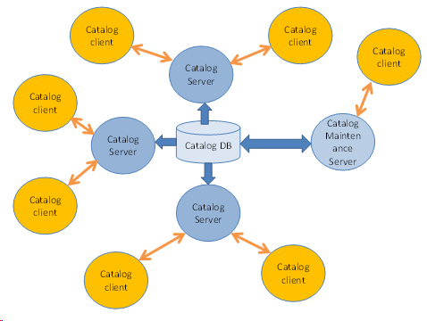

Catalog Client and Server ApplicationThere are two types of Catalog applications:
Catalog Client ApplicationsCatalog Client applications are Order Entry (OE) and Order Management (OM) applications that use the Catalog definitions and rules.The OE and OM applications needs only Catalog client product. The Catalog client maintains its own cache of Catalog definitions and uses a Catalog server as data source. This way the OE/OM client application may continue to work with limited functionality even if the Catalog server is not available. The Catalog client applications can be implemented on the product platform as well as any other platform. Catalog Server ApplicationsServer applications are applications that include the Catalog server product and customization metadata (Catalog server application metadata). The customization metadata may add new API and product lifecycle workflow. It contains rules that cannot be expressed in Catalog Rule language, such as rules that need access to data base or external systems (through external interfaces). Catalog server applications contain the logic to synchronize the catalog with external catalog products and data sources as well to push the Catalog content to other systems. The Catalog server should be a dedicated application, for example, the Catalog server metadata should contain only the metadata that customizes the Catalog server product. While in principle it is possible to run OE/OM applications on the Catalog server, we strongly discourage this practice. The Catalog Server application provides Web services that can be used by third party order entry applications. Third-party Catalog clients communicate with the Catalog through SOAP interface. This way, the clients have the advantage of being faster – first, because of the Catalog definition cache they maintain and second, because of the simpler and faster protocol they use. The table below shows the major differences between different Catalog configurations:
Catalog ArchitectureThe architecture allows for maximum scalability of the Catalog applications: One Catalog server can serve many client applications as well as many catalog servers may work with the same catalog database as long as only one is used for definition maintenance as shown below:  |